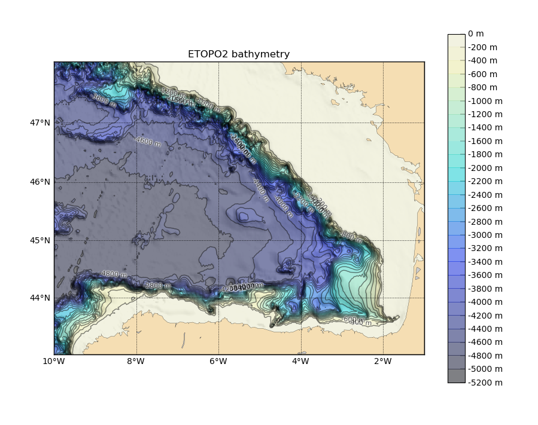
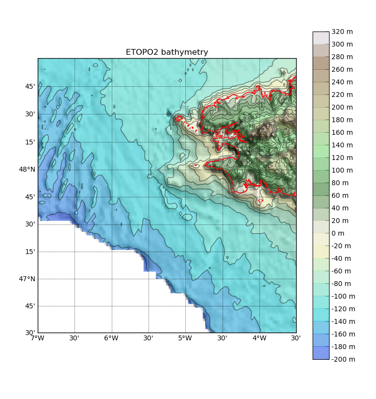

1.6.2.6. showbat.py – Plot the bathymetry in an area¶
| Usage: | showbat.py [options] [ncfile]
|
|---|---|
| Description: | Plot the bathymetry in an area. Value are considered negative under the sea and positive on land. |
| Options: |
|
| Examples: | $> showbat.py -s 8 --clglow -o showbat1.png
Please set min longitude (or use -f or --xmin options): -10
Please set max longitude (or use -f or --xmax options): -1
Please set min latitude (or use -f or --ymin options): 43
Please set max latitude (or use -f or --ymax options): 48

Figure created using the first example. $> showbat.py --xmin=-7 --xmax=-3.5 --y0=46.5 --y1=49 \
--maxdep=200 --land -s 8 --clsize=0 -o showbat2.png

Figure created using the second example. |
| See also: |